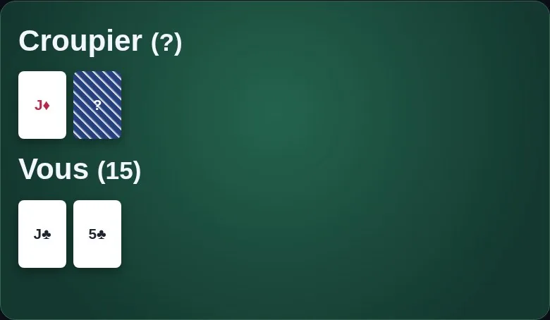

L’objectif
S’approcher de 21 sans le dépasser, en choisissant de tirer une carte ou de rester, avec un calcul automatique des scores.
Un jeu de cartes en Python face au croupier, accompagné d’une adaptation JavaScript jouable directement dans le portfolio.

S’approcher de 21 sans le dépasser, en choisissant de tirer une carte ou de rester, avec un calcul automatique des scores.
Le projet Python organise les mains du joueur et du croupier, calcule les scores et réagit au clavier. La démonstration du portfolio reprend ces principes dans une interface web indépendante.
Gérer plusieurs états de partie et calculer la valeur d’une main lorsque les As peuvent valoir 1 ou 11.
Les cartes et les mains sont représentées par des listes et des données structurées. Le total est recalculé après chaque action, avec ajustement de la valeur des As et une résolution distincte pour le tour du croupier.
Python, listes et dictionnaires, logique conditionnelle, gestion d’événements clavier et adaptation d’une mécanique de jeu à JavaScript.
La démo web utilise des règles simplifiées, sans mises ni paris. Le dépôt GitHub conserve le projet Python / Pygame Zero original.
← Retour aux projets